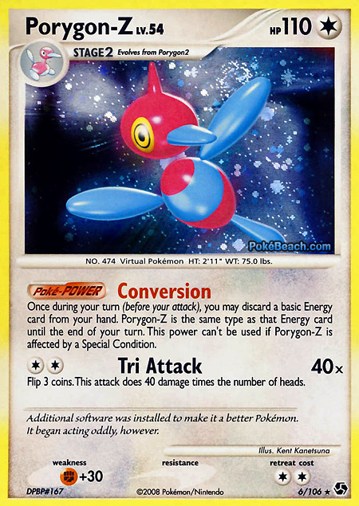

|

|
A estas se les llama Pokémon Básico o Evolución. (Si el Pokémon es de Fase 1 o Fase 2, es una carta de Evolución.) Las cartas de Evolución funcionan igual que los Pokémon Básicos; simplemente, son una forma avanzada. Las evoluciones suelen ser más poderosas que las anteriores, ya que son una forma avanzada, con ataques más poderosos, más PV, etc. Generalmente, (Sólo en Diamond & Pearl Series y Platinum Series) a medida que los Pokémon evolucionan, su debilidad va aumentando.
Las partes en que vienen integradas las tarjetas Pokémon son:
- PV o Puntos de Vida (HP o Health Points en ingles): Es la cantidad de Puntos de vida que le quedan al Pokémon. Para restarse se utilizan monedas con un Diez marcado en él (Contadores de Daño).
- Nombre del Pokémon: El nombre del Pokémon.
- Energía: Las energías vienen siendo: Normal, Planta, Fuego, Agua, Lucha, Relámpago, Psíquica, Oscuridad, Acero, Dragón y Hada.
- Etapa de cadena evolutiva: Es la etapa del Pokémon en sus evoluciones. Los Pokémon bebes se cuentan como básicos, llegando asi a ser sus evoluciones básicas.
- Habilidad: Es la habilidad de dicha carta, antes eran conocidos como Poké-Poder/Cuerpo (Poké-Power/Body).
- Ataques: Vienen subdivididos en Ataque, Daño y Efecto (algunas veces el Efecto potencia el Ataque).
- Debilidad y Resistencia: Es la debilidad del Pokémon hacia un ataque/Es el daño que se le resta al ataque (viene junto al tipo resistente).
- Número de Colector: El número del Pokémon en el mazo.
- Símbolo de Rareza: Indica cuanto es de raro el Pokémon.
|